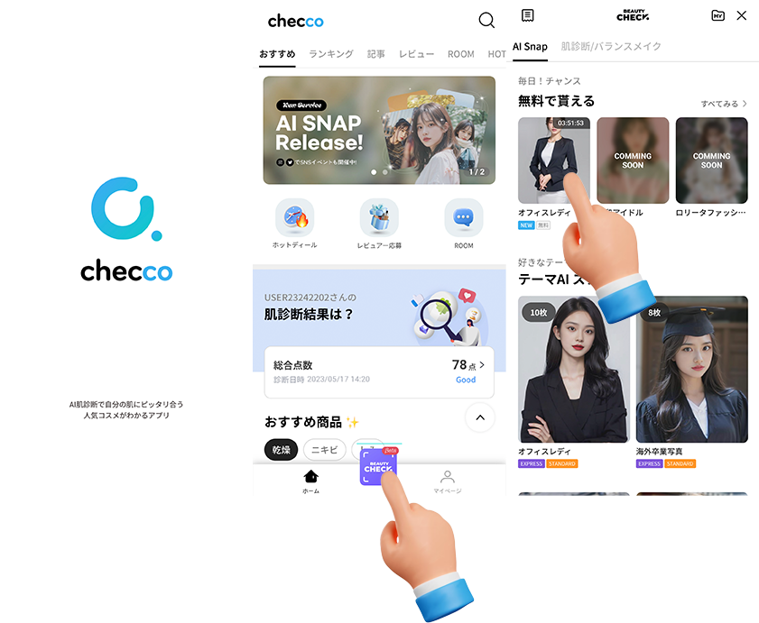

About Me

현재 다니고 있는 스타트업에서 1년 반 경력으로 기획/개발/배포 일을 하였습니다. 개발에선 오픈소스 AI 모델을 활용하여 데이터를 가공 후 전달하는 서빙 API를 만들었습니다. 2 가지 주요 프로젝트를 진행하였고 실서비스로 운영하고 있습니다.
자동화 잘 해내는 것을 ‘분신술’로 여기고 있습니다. 그렇게 두 사람, 세 사람, N사람 역할을 하는 것이 매우 뿌듯합니다. 비효율적인 작업을 자동화로 개선하고 그 작업을 하던 팀원과 지속적인 소통으로 기능을 업데이트 하는 것을 사내에서 사이드 프로젝트로 했고 어느 정도 검증이 되면 정식화하는 작업을 했습니다.
’적절한 맛집을 찾는 능력‘을 귀한 능력으로 여기고 있습니다. 같은 지역, 같은 시간의 유저라도 유저 취향에 따른 맛집을 리스팅할 수 있는 것이 꿈의 프로젝트로 여기고 있습니다.
목차
| 프로젝트 이름 | 설명 |
|---|---|
| AI Snap | 유저의 셀카 이미지로 다양한 콘셉트의 이미지 사진을 제작해 주는 AI 서비스 |
| BalanceMakeup | 유저의 얼굴 분석을 통해 ‘나에게 맞는 미‘, ‘나의 얼굴에 맞는 메이크업’을 제시해주는 서비스 |
| Catch V | 디지털 성범죄 피해자 얼굴을 학습하여, 유포 범죄에 악용되는 피해자 영상 URL를 찾아주는 오픈소스 프로젝트 |
| What2Eat | 데이터 분석을 통한 맛집 추천 서비스 |
| NoCountryForOldMan | NLP를 활용하는 모두랩 논문 연구 프로젝트 |
| naverTrans | 번역 기능을 사용할 수 있는 파이썬 패키지 |
Work Experience.
🏢 ELINHA Co., Ltd
2022.10.31 ~ 현재
checco라는 플랫폼을 통해 일본에서 한국 화장품에 대한 정보를 제공하며, AI 서비스 체험, 커뮤니티, 특가 판매 등 다양한 서비스를 운영하고 있습니다. 일본 애플 앱스토어의 한국 화장품 카테고리에서 1위를 한 바가 있습니다.
🗂️ 주요 프로젝트
1. AI Snap
유저의 셀카 이미지로 다양한 콘셉트의 이미지 사진을 제작해 주는 AI 서비스
기여한 부분
- SNOW의 AI 프로필, Meitu, Carat 등 경쟁 AI 이미지 생성 서비스 리뷰 후 자사만의 차별 서비스 기획
- 정면 여부 판단 기능, 얼굴 쪽 머리카락 지우는 기능, 눈가 및 팔자주름 지우는 기능 개발
- Stable Diffusion을 활용한 테마에 따른 이미지 생성
- 사용자 얼굴 변경을 위한 딥페이크 기술에 중점을 둔 AI Snap 기능의 설계 및 구현
- Docker를 활용하여 배포 시스템 구축
사용한 기술
- Python
- OpenCV
- TensorFlow
- PyTorch
- Stable Diffusion
- MediaPipe, Google
- Docker
- NAVER CLOUD PLATFORM
성과
- Phase2 업데이트에 맞춰 일본 대형 이커머스와 크리스마스 콜라보 프로젝트 진행
- checco 플랫폼 가입자 수 AI Snap 기능 출시 후 300% 증가
이용 가이드
checco AppStore 
2. BalanceMakeUp
기간: 2023.03.13.~2023.07.18.

유저의 얼굴 분석을 통해 ‘나에게 맞는 미‘, ‘내 얼굴에 맞는 메이크업’을 제시해주는 서비스
기여한 부분
- 기획서 작성부터 PoC 진행 등 모든 회의에 참석하여 서비스 개발을 주도
- 얼굴 분석 모델 개발
- 얼굴형 분류 기능
- 얼굴 비율 분석 기능
- 메이크업 전문가와 협업을 통해 메이크업 가이드 문구 정리
- Docker Compose를 이용하여 Nginx와 FastAPI를 사용하는 병렬 처리 구현
사용한 기술
- Numpy
- TensorFlow
- MediaPipe, Google
- Generative Adversarial Networks (GANs)
- FastAPI
- Ngnix
- Docker
- Docker Compose
- NAVER CLOUD PLATFORM
이용 가이드
3. Catch V
기간: 2022.06.20.~2022.12.02.
디지털성범죄피해자를 지원하기 위해, 유포 범죄에 악용된 영상의 URL 주소를 찾아주는 오픈소스 프로젝트소개영상
기여한 부분
- 프로젝트 리더 및 기획
- 프로젝트 아키텍처 설계
- 유포 우려가 있는 사이트 URL 수집을 위한 웹크롤러 개발
- YOLO와 FaceNet를 활용한 닮은 얼굴 디텍팅 모델 개발
사용한 기술
- Flask
- Pytorch
- TensorFlow
- OpenCV
- YOLO(Object Detection)
- FaceNet
- AmazonRDS
성과
📚 Other Experience.
사이드 프로젝트
1. What2Eat 머먹?
카카오맵 리뷰에서 유의미한 평가만 모은 맛집 추천 서비스
기여한 부분
일에 치여 기운이 없을 때마다 꿈의 프로젝트를 생각하며 한 단계씩 업그레이드 해나가는 저만의 프로젝트입니다. 로고디자인, 스크래핑, 데이터구조 설계, 웹 서비스 개발 등 혼자 하였습니다. 지인 개발자끼리 모여 하루 해커톤을 열어, 데이터 구조 개편 작업을 하였습니다. 덕분에 읽기 속도가 빨라 졌습니다.
개발 방법

만족한 유저와 불만족한 유저 수를 계산하여 노출하기
- 유의미한 호(好) 리뷰 찾는 방법
카카오맵에서 스크래핑 해온 음식점 리뷰 데이터에서 개인의 평균 평점이 3.8 이상인 유저가 해당 음식점에 4점 이상의 별점을 남겼다면 그 음식점에 만족을 했다고 보고 유의미한 호(好) 리뷰어라고 판단했습니다.
- 쩝쩝박사 - 유의미한 호(好) 리뷰어 인원
- 쩝쩝퍼센트 - (유의미한 호(好) 리뷰어 수/ 전체 리뷰어 수) * 100
화면 노출 조건
쩝쩝박사 인원 수가 5명이 넘는 음식점 중에서 쩝쩝 퍼센트가 높은 순으로 목록을 제공됩니다.
- 유의미한 비호(非好) 리뷰 찾는 방법
개인의 평균 평점이 3.5 이상인 유저가 해당 음식점에 1.5점 이하로 별점을 남겼다면 그 음식점에 불만족을 했다고 보고 유의미한 비호(非好) 리뷰어라고 판단했습니다.
- 비호퍼센트 - 유의미한 비호(非好) 리뷰어 수 / 전체 리뷰어수 * 100
화면 노출 조건
비호퍼센트가 10프로 넘으면 호(好) 화면 노출 조건에 맞더라도 비호퍼센트를 노출하며 주의를 줍니다.
- 비호퍼센트 - 유의미한 비호(非好) 리뷰어 수 / 전체 리뷰어수 * 100
- 채팅 형식의 UX
처음엔 지도 기반으로 개발 하였습니다. Streamlit으로 프런트를 짜다보니, 자유도가 많이 떨어졌습니다. 지도에 갖혀 벗어나지 못 하는 등 유저들이 불편하다는 피드백이 많았습니다.
그러다가 카카오톡에서 친구에게 맛집 리스트를 보내주듯 구현하면 어떨까 아이디어가 떠올라. 맛잘알 친구가 알려주는 맛집 리스트 개념으로 UX를 잡았습니다.

사용한 기술
- Streamlit
- Pandas
- Selenium
2. NoCountryForOldMan
세대 간 인식의 격차가 심화되는 오늘날의 추세 속에, 영화 <인턴>의 리뷰를 통해 주니어 세대가 바라보는 이상적인 시니어 세대의 모습을 알아보는 것을 목적으로 하는 모두랩 논문 연구 프로젝트
사용한 기술
- Pandas
- Selenium
- BeautifulSoup4
- scikit-learn
- LangChain
- Mistral-7B
- Sentence-transformers model
기여한 부분
- CGV, 왓챠, 다음영화에서 리뷰 스크래핑
- 맞춤법검사, 문장분리, 감성분석, 군집화 전반적인 코드 작업
- LLM을 활용한 군집별 요약 작업
- 연구 방법, 결론(2_2) 부분 논문 작성
성과
- 2023 모두콘 연사 < LLM을 이용한 색다른 Topic 모델링>
3. naverTrans
네이버 검색창의 번역 기능을 사용하는 파이썬 패키지
기여한 부분
- 네이버 검색창 Ajax API를 활용한 패키지 코드 작업
- Pypi 업로드
이용가이드
pip install navertrans
from navertrans import navertrans
src_txt = 'Please give a round of applause to NAVER.'
result = navertrans.translate(src_txt, src_lan="en", tar_lan= "ko")
print(result) # Output: '네이버에게 박수 부탁드립니다.'
🛠️ 기술스택

🎖️ 수상
- 2022 빅데이터 경진대회 ‘사회보장 유레카’ 우수상
- 2022 공개 SW개발자대회 동상
- 2023 수묵화 데이터셋을 활용한 공모전 장려상
🗣️ 발표 및 기타 활동
- 요기요 ‘취향식탁’ 마케팅팀 기술 PT
- 네이버 부스트코스 코딩코치
- 코칭스터디 Data Science Projects 2024
- 코칭스터디 12기 Python Everybody
- 코칭스터디 10기 Beyond AI Basic
- 모두의 연구소 “노인을 위한 나라는 없다” 랩 활동
- 모두콘2023 연사 < LLM을 이용한 색다른 Topic 모델링>

🎓 교육
- 2011 포항 대동고등학교
- 2015 용인대학교 영화영상학과
- 2022 (주)엔코아 부트캠프 PLAYDATA AI 과정
- 2023 방송통신대학교 통계 데이터학과